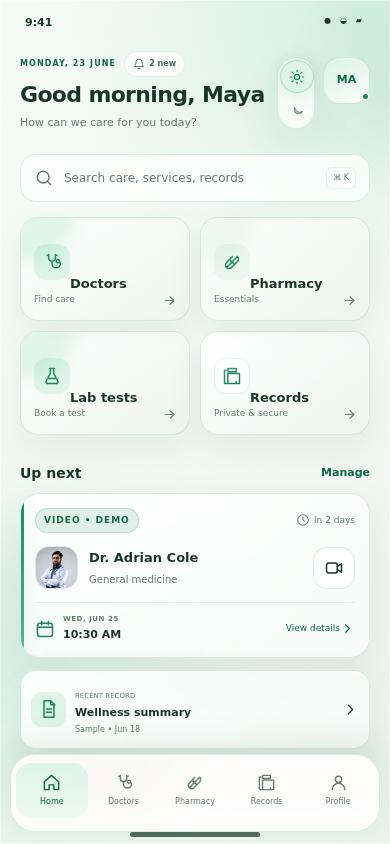
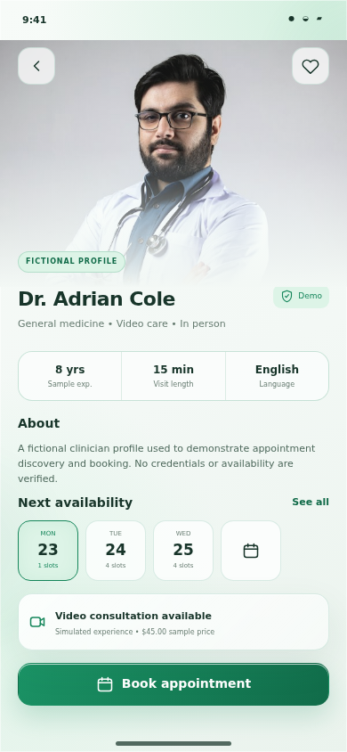
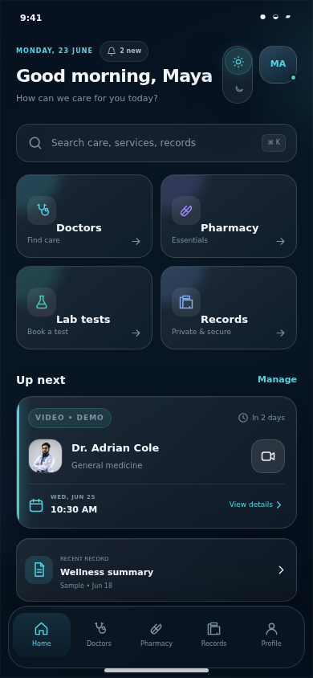
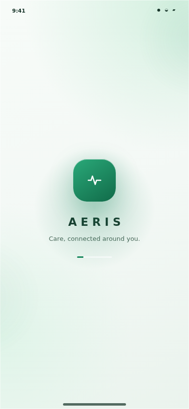

Healthcare journeys often span disconnected tools and processes.
People may use separate apps, websites, calls, and physical documents for consultations, medicines, tests, and reports. That fragmentation can make next steps harder to understand.
A unified mobile experience for doctor discovery, pharmacy, lab tests, health records, emergency information, and personal care management.



The concept explores how essential healthcare tasks might live in one predictable, privacy-conscious experience without making unsupported clinical promises.
People may use separate apps, websites, calls, and physical documents for consultations, medicines, tests, and reports. That fragmentation can make next steps harder to understand.
The experience needs to stay readable, accessible, trustworthy, and honest about what a prototype can and cannot do.
22 screens, dual themes, local demo state, navigation, validation, cart, booking, notification, and preference interactions.
Interviews, surveys, competitor review, accessibility audit, and usability testing remain planned activities.
No real doctors, lab providers, pharmacies, payments, records, video calls, or emergency response are connected.
The strategy is organized around a small set of core journeys, reusable interaction patterns, and assumptions that must be validated before real-world use.
Prioritize the next useful action over dense health dashboards.
Label simulated behavior and protect sensitive details.
Reuse search, filters, booking, status, and confirmation patterns.
Readable type, clear labels, focus states, and reduced motion are system requirements.
The attached planning document contains a proposed methodology, not completed research. The case study keeps that distinction explicit.
Understand current booking, medicine, test, record, trust, and caregiver behaviors.
PROPOSED METHODExplore service frequency, digital confidence, privacy expectations, and accessibility needs.
OPTIONAL METHODBreak common healthcare journeys into actions, decisions, information needs, and recovery paths.
PROPOSED METHODReview comparable interfaces and test the prototype’s contrast, labels, focus, motion, and scaling.
PLANNED REVIEWSuggested products from the planning document are retained as research candidates only.
!No claim is made that these products have or lack specific features. Platform, date, and evidence should be recorded during the actual review.
These provisional personas help pressure-test the concept until evidence can validate, revise, or replace them.
May ask for clear confirmation, costs, and a visible next step.
May question what information is stored and who can access it.
May switch between apps, calls, paper reports, and family messages.
May experience uncertainty when status or provider information is unclear.
Select a stage to explore the user goal, potential friction, and the prototype’s design response.
The mobile navigation emphasizes five frequent destinations while keeping lab tests and emergency information easy to reach from Home.
Original low-fidelity exports were not present in the project. The diagrams below are clearly labeled reconstructions based on the implemented hierarchy—not original research artifacts.
Light mode combines emerald, mint, and warm off-white surfaces. Dark mode uses navy, cyan, and subtle violet illumination. Both share the same information hierarchy and interaction model.
Clear labels, calm contrast, honest status messages.
Atmospheric depth without a noisy medical dashboard.
Glass surfaces, hairline borders, restrained motion.
Readable language and purposeful reassurance.
Switch between actual app screenshots. The structure, service hierarchy, and semantic status colors stay consistent.
Shared semantic tokens and composable components keep doctors, pharmacy, lab tests, and records visually coherent.
Values shown are extracted from the implemented app.
#07111F#0B1728#F3F8F5#DDF4E7#16865B#50D7E5#F2BF68#FF7B85DM Sans supports readable interface text. Manrope adds a crisp, editorial voice to key headings and values.
These static-site demos echo implemented app states.
Default · loading · disabledFocus · validationSemantic + labeledPersistent statePress feedbackToast · modal · sheetEvery image in this gallery is a genuine 390 × 844 capture from the running React application.
This device navigator uses genuine screenshots. It demonstrates screen sequence, not a live embedded application.
Brand entrance and prototype status.

Replay small demonstrations of the implemented motion language. Reduced-motion preferences disable non-essential effects.
Logo scale, glow, copy rise, progress.
Short fade and vertical rise.
Persistent active-state movement.
Restrained confirmation, no celebration loop.
Communicates wait without blocking context.
Sun/moon selection and color crossfade.
Each walkthrough shows the implemented design flow and the honest simulated outcome.
Implemented considerations and future validation are separated below to avoid overstating compliance.
Search, filter, and choose a fictional profile.
Select a date and time and understand the demo confirmation.
Locate and preview a sample health record.
Choose collection, date, and time window.
Find safe next-step guidance without delay.
Update notification, privacy, or text-size settings.
Move between light and dark without losing the current screen.
The result is a polished, interactive healthcare prototype with a reusable system and complete service journeys. It demonstrates design intent, not real-world clinical effectiveness.
Clear states, transparent limitations, and predictable navigation matter as much as visual polish.
Shared search, filter, booking, status, and confirmation patterns reduce complexity across services.
Conduct interviews, competitor review, accessibility evaluation, and task-based usability testing.
Verified providers, consent-based family profiles, secure record sharing, and additional languages remain future scope.
A complete UX/UI concept for a more connected everyday healthcare experience.
Concept design · 22 app screens · Static portfolio case studyPreference saved in this demo.
Fast feedback explains what happened and what the user can do next.
Sheets keep related detail close to the active task and dismiss quickly.